Homelab Wizard
Your household's photos, passwords, documents, money, music, and books, on a computer you own.
A desktop app and a small CLI that install, connect, back up, update, and watch over 70+ self-hosted apps.

What it is · Tour · How it works · Get started · What it replaces · Everyday tasks · Questions · Apps · Docs · What's new
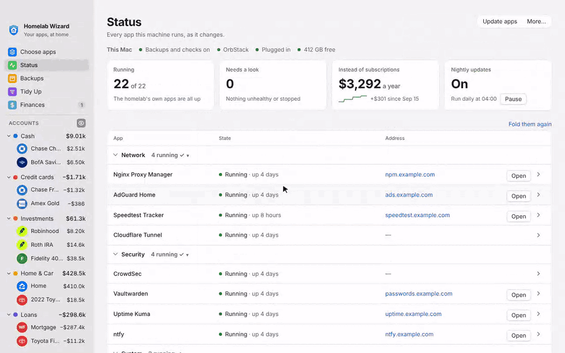
Note
Beta. Homelab Wizard runs a real household on a Mac, and it is now being tested on Windows and Linux machines too. The builds are not signed yet (no Apple Developer ID or Windows code-signing certificate), so each system asks once whether to trust them. Open problems are in Known Issues; what changed in each version is in the CHANGELOG.
What it is¶
Homelab Wizard turns a computer you already own (a Mac mini, a desktop PC, a Steam Machine) into your household's own private cloud. It installs free, open-source apps that do the jobs you pay subscriptions for, such as photo backup, a password manager, and streaming for the films and music you own. It connects them to each other, and then it looks after them:
- A copy of everything, every night, encrypted before it leaves the house, and a monthly test that proves a restore works.
- Updates while you sleep, each app's data copied first, with a one-click undo. An app that comes back unwell is put back by itself.
- A watchdog every 15 minutes that restarts what hangs, and an alert on your phone when something needs you.
- Nothing published to the internet. Your phones and computers reach the apps over Tailscale's private network, at home and away.
Two parts are its own: Finances, the household's money paycheck by paycheck, and Tidy Up, which keeps the music, films, and books you download sorted. No command line is needed: install the app, click Set it up for me, tick what you want, and it does the rest.
Take the tour¶
| Status Every app on the computer, live: what runs, what needs a look, and one button to open or start each. 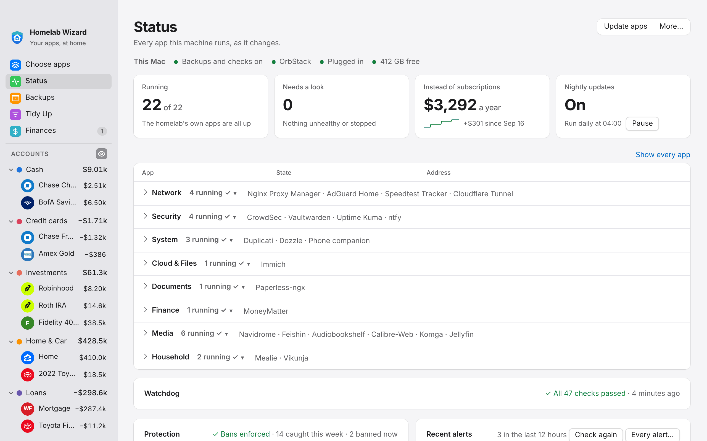 |
An app's page Restart it, read its log in plain words (explained by the AI on this computer), and undo an update. 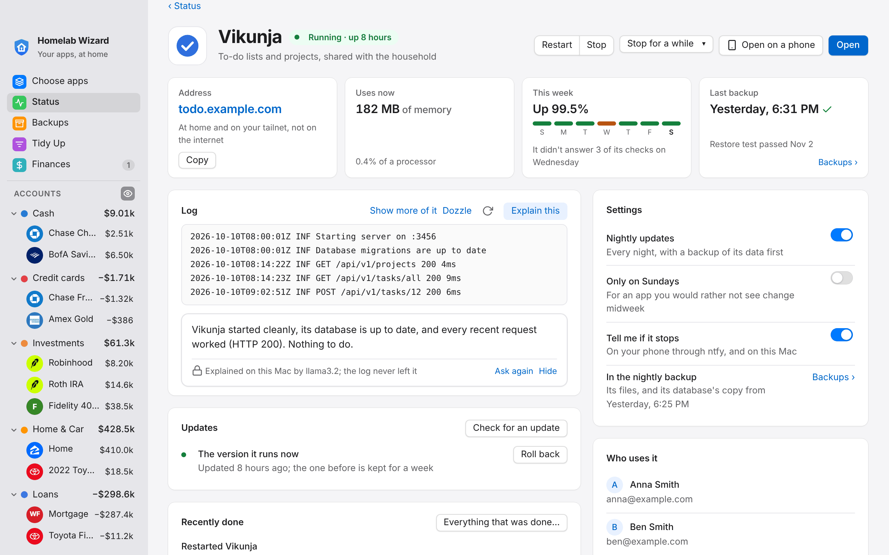 |
| Choose apps Tick what you want; each app says what it does and which subscription it can replace. The plan says what it will install before anything happens. 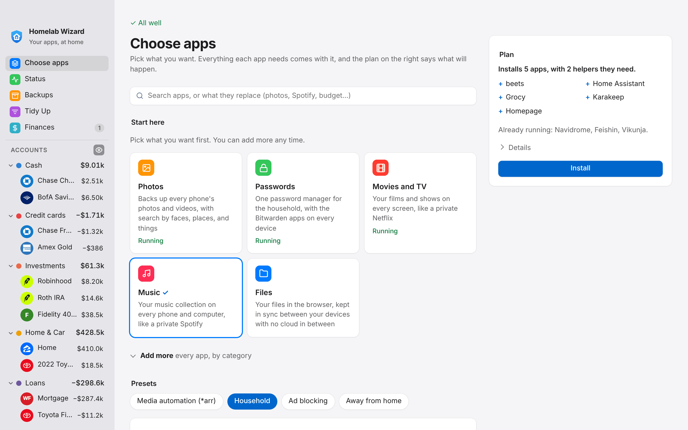 |
Backups Each app's newest copy, the encrypted off-site jobs, the last restore test, and a printable recovery kit. 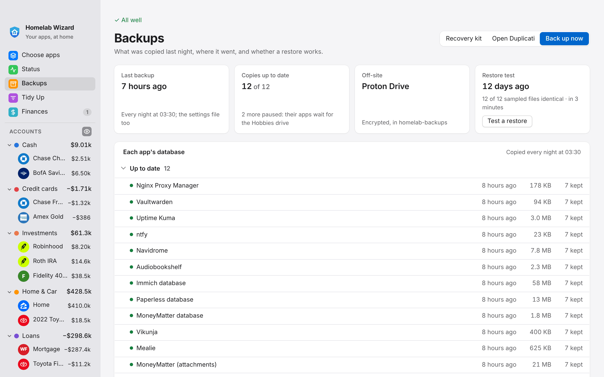 |
| Finances What each paycheck leaves once the bills are paid, and net worth month by month. Typed in by you, kept at home, no bank connection. 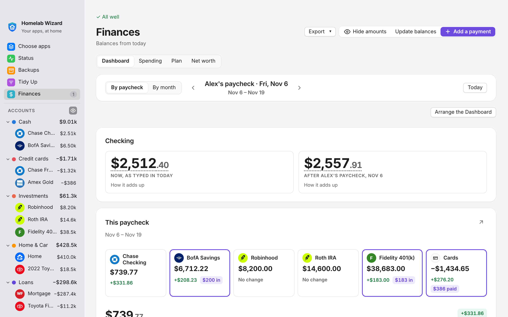 |
Tidy Up Drop in a download and it's filed in the right library: music, films, shows, books, audiobooks. Undo for every change. 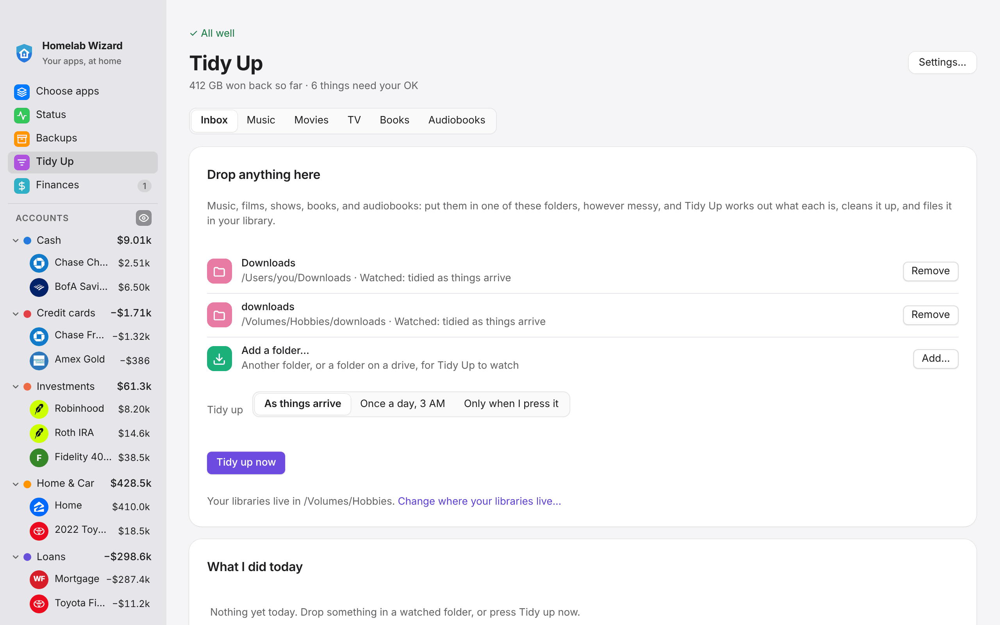 |
| Setup The checklist for finishing up, checked live. Do the N I can do for you runs every step that's ready. 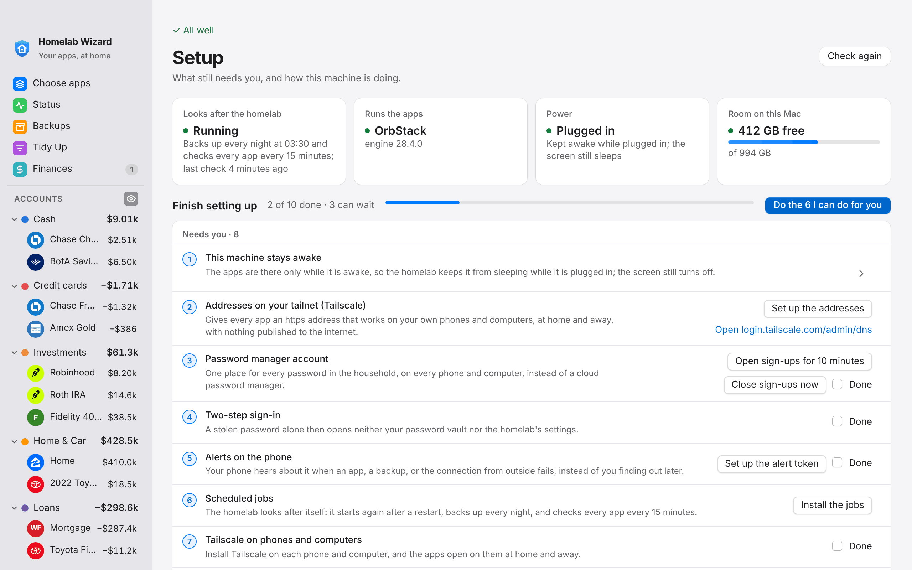 |
On your iPhone The Homelab app: Status, each app's page, Backups, and Finances in your pocket, at home or away, behind Face ID. 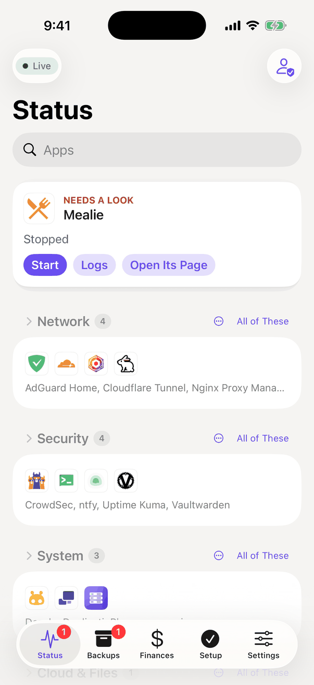 |
On your iPhone¶
The Homelab app for iPhone and iPad keeps the homelab in your pocket: Status with Start and Logs, each app's page, Backups, the household's Finances, alerts, and a widget, behind Face ID. A phone only looks until you let it make changes, and sees Finances only if you allow it. It's built with Xcode on your own Mac for now, not from the App Store (apple-client).
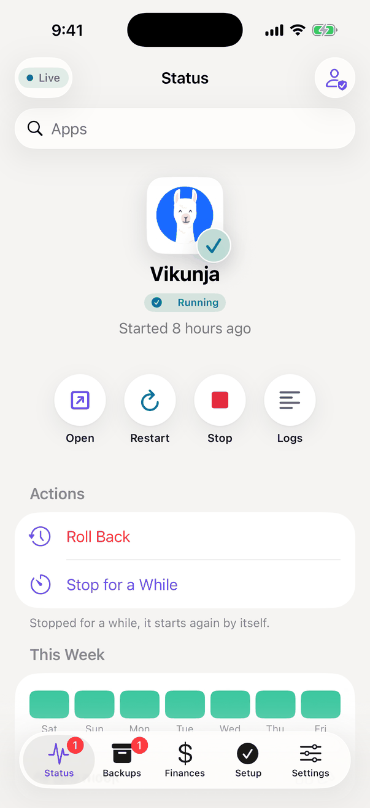 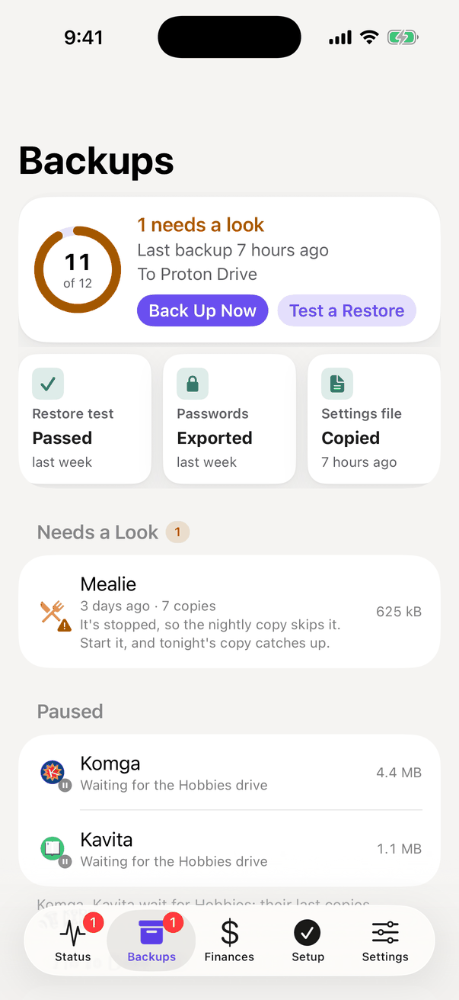 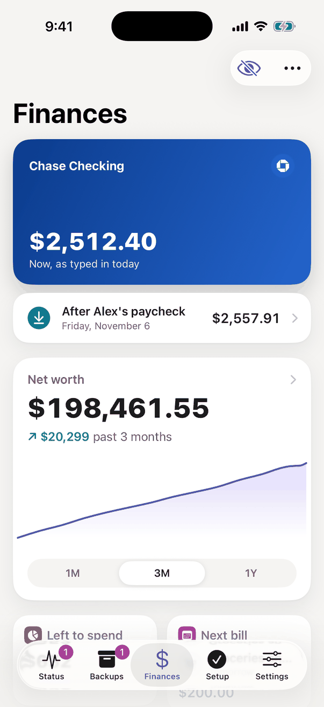 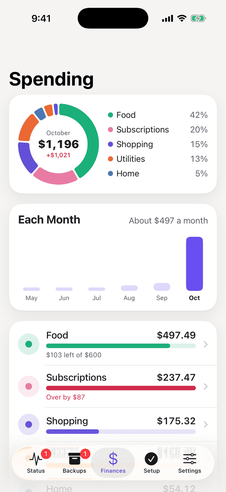
Every screen in more detail, with what each button does: the full tour.
How it works¶
flowchart TB
you(["<b>Your phones and computers</b><br/>at home and away"])
subgraph home["The computer at home"]
direction LR
wizard["<b>Homelab Wizard</b><br/>the app, and its agent<br/>in the background"]
apps["<b>Your apps</b><br/>Photos · Passwords · Documents<br/>Films · Music · Books · …<br/>each in its own container"]
wizard -- "installs, connects,<br/>updates, restarts" --> apps
end
backup[("<b>Your backups</b><br/>a cloud drive's folder,<br/>or an external drive")]
you -- "Tailscale: private,<br/>nothing on the internet" --> apps
wizard -- "every night,<br/>an encrypted copy" --> backupThe apps are free, open-source projects (Immich, Vaultwarden, Paperless-ngx, Jellyfin, Navidrome, and 60-odd more), each running in its own container through Docker, or OrbStack on a Mac. Homelab Wizard is the part that picks them, sets them up with a strong password each, connects them to each other, and keeps them running, with an alert on your phone when something needs you. The traffic paths, the engine, and a night of jobs, drawn out: Architecture.
Get started¶
You need a computer that stays on (a Mac, a Windows 10 or 11 PC, a Linux machine, or a Steam Machine; 8 GB of memory runs the Start here apps, 16 GB is comfortable), its container runtime (OrbStack on a Mac, Docker Desktop on Windows, Docker Engine on Linux), and a free Tailscale account. Within the first week, add somewhere for backups: a cloud drive's synced folder or an external drive. No domain and no router changes. Getting Started walks through every step with pictures.
- Install the app with one pasted line. On a Mac or Linux, in Terminal:
curl -fsSL https://raw.githubusercontent.com/Snooper42/homelab-wizard/main/install.sh | sh
On Windows, in PowerShell:
irm https://raw.githubusercontent.com/Snooper42/homelab-wizard/main/install.ps1 | iex
Both download the newest build from Releases, check it against GitHub's SHA-256 checksum, install it, and open it. The line is there because the builds aren't signed yet: a browser download gets blocked, a download from Terminal or PowerShell doesn't. Both scripts are short enough to read first (install.sh, install.ps1).
2. Open it and choose Set it up for me. It makes the homelab folder (~/Homelab), with a strong password for every app, and starts the essentials (updates, backups, alerts).
3. Pick what you want on Choose apps (Photos, Passwords, Movies and TV, Music, Files, or anything from the full list) and click Install.
4. Finish on Setup. Do the N I can do for you runs every step that is ready; the rest say in one line what they give you. Signing in to Tailscale and installing it on your phones is the part only you can do.
You are done when Setup leaves the sidebar (it comes back by itself if a step comes undone) and every app on Status has a green dot. Then put Tailscale, the Homelab app, and the apps' own phone apps on each phone (Getting Started › Set up each person's phone).
Every download, and the command line
| Platform | Download | Install | |---|---|---| | macOS (Apple Silicon and Intel) | [Releases › Latest](https://github.com/Snooper42/homelab-wizard/releases/latest) › `Homelab-Wizard-macOS.dmg` | `install.sh` (above). Or open the download, drag the app to Applications, and clear the download flag once: `xattr -dr com.apple.quarantine "/Applications/Homelab Wizard.app"`. Later updates install themselves | | Windows 10 and 11, x64 or ARM | [Releases › Latest](https://github.com/Snooper42/homelab-wizard/releases/latest) › `Homelab-Wizard-Windows-Setup.exe` | `install.ps1` (above). Or run the download (SmartScreen: More info › Run anyway, while it's unsigned), or unzip the portable build. Later updates install themselves | | Ubuntu, Debian, Fedora, Arch | Releases › Latest › `.deb`, `.rpm`, or `.pkg.tar.zst` | `curl -fsSL https://raw.githubusercontent.com/Snooper42/homelab-wizard/main/install.sh \| sh` picks the package and installs it; or `sudo apt install ./homelab-wizard_*.deb` (or `dnf install`, `pacman -U`). Later updates install themselves | | SteamOS, or Linux without WebKitGTK | Releases › Latest › `Homelab-Wizard-x86_64.AppImage` | The same `install.sh` line (on SteamOS it puts the AppImage in `~/Applications`), or `chmod +x` and open it; Settings › This machine › **Add to the app menu** | Every build carries the `homelab` CLI, so nothing else is needed. What each contains: [Releasing](docs/Releasing.md#each-platforms-build). Building it yourself: [app/README.md](https://github.com/Snooper42/homelab-wizard/blob/main/app/README.md). Prefer the command line? The same homelab from git, shown here on a Mac (on Linux, install Docker and Go from your package manager; on Windows, use `homelab.cmd`):brew install --cask orbstack # then OrbStack › Settings › Start at login
brew install go # ./homelab builds itself on first run
git clone https://github.com/Snooper42/homelab-wizard.git ~/Homelab
cd ~/Homelab
./homelab doctor # checks the machine, the runtime, and the settings
./homelab up # makes .env with generated passwords, starts the essentials
./homelab setup # the same checklist as the app's Setup screen
What it replaces¶
A small private cloud on a computer at home. It does the jobs you would otherwise pay monthly subscriptions for, but the apps run at home and the files stay yours.
| When you want to… | Open | Instead of paying for |
|---|---|---|
| Back up phone photos and find them by face, place, or thing | Immich | iCloud+ 2 TB |
| Keep everyone's passwords | Vaultwarden (with the Bitwarden apps) | 1Password Families |
| Scan and search receipts, letters, and paperwork | Paperless-ngx | Evernote |
| See what each paycheck leaves after the bills, and your net worth | Finances, a screen of Homelab Wizard itself | a spreadsheet, or a budgeting app |
| Sort and tag the music, films, shows, books, and audiobooks you download, and free the space they waste | Tidy Up, a screen of Homelab Wizard itself | a music tagger, a file-renaming app |
| Plan the budget, and track investments | MoneyMatter or Actual Budget, Ghostfolio | YNAB, a portfolio tracker |
| Watch your movies and shows | Jellyfin | Netflix and others, for what you own |
| Listen to your music, audiobooks, and podcasts | Navidrome, Audiobookshelf | Spotify Family, Audible |
| Recipes, groceries, chores, and to-dos | Mealie, Grocy, Vikunja | Plan to Eat, a list app, Todoist |
| Run the lights, locks, sensors, and cameras | Home Assistant, Frigate | each device's own cloud app |
| Reach everything while away, with ads blocked | Tailscale, AdGuard Home | a VPN, NextDNS |
…and 60-odd more. The apps are free; Homelab Wizard is the part that sets them up, connects them, backs them up every night (and proves a restore works), updates them overnight with a one-click undo, restarts what hangs, alerts your phone, and gives each person in the household one sign-in. Used to the full, it can replace about $4,487 a year in subscriptions (what it saves).
Everyday tasks¶
Adding an app, opening one on a phone, fixing what's down, updating or undoing an update, backing up and testing a restore, adding a person, moving to a new computer: each one in the app and the same from a terminal, in Everyday tasks. Adding your own app, every command, and taking the homelab off a machine are there too.
Questions¶
Is it safe?
Nothing on the computer is opened to the internet. By default the apps answer only your own devices over Tailscale's private network. With an optional domain, the apps that work away from home go through a Cloudflare tunnel and past CrowdSec, which blocks known attackers. Passwords are stored encrypted, and backups are encrypted before they leave the house. The full review: [Security](docs/Security.md). Found a hole? Please report it privately: [SECURITY.md](SECURITY.md).What if the computer breaks?
The nightly backup holds the settings, passwords, documents, databases, and photos, so everything can be rebuilt elsewhere: on a new machine, `./homelab rebuildDo I need a domain?
No. Every new homelab starts in Home mode: each app gets an `https://` address on your tailnet, at home and away. A domain adds short names (`photos.example.com`) and lets chosen apps open without Tailscale; add one any time ([Getting Started](docs/Getting%20Started.md#later-a-domain-of-your-own)).Will it fit on my computer?
The install plan adds up the memory the apps you picked need and warns before they would not fit beside the system and everyday apps. On 8 GB, the *Start here* picks fit; Immich's face and smart search is the one to add with care.How does it stay up to date?
The app looks for updates every 15 minutes and when its window comes forward. A line at the top of the window then says *Homelab Wizard … is ready*: **What's new** shows the patch notes, **Update now** puts the homelab files and the new app in place and opens it again, keeping your settings, data, and own apps (`./homelab upgrade` in a terminal). The apps themselves update overnight, each with a fresh database dump first; an update that leaves an app unwell is rolled back by itself. [Upgrading](docs/Upgrading.md) says what each version asks of you, if anything.Does anything leave the house?
From Homelab Wizard itself: the backups (encrypted, to the place you pick), the outside heartbeat if you set one up, and what it asks GitHub (homelab and app updates, and the release notes of the apps you run). **Explain this** uses the Ollama on this computer. The apps do what they always do online (image downloads, film and book details, CrowdSec's community blocklist), and Tailscale's coordination server knows your devices; your files, photos, and passwords stay home.I already run some of these apps in Docker.
`./homelab detect` finds them, and `./homelab adoptWhich systems are proven?
It runs a real household on a Mac. Windows, Linux, and SteamOS are built, tested in CI every night, and being tried on real machines: [Host › The same on every system](docs/Host.md#the-same-on-every-system) shows what each system has shown so far, and [Known Issues](docs/Known%20Issues.md) what is open.What runs¶
Over 70 apps in nine categories: the baseline ones start with the homelab, the rest are a tick in Choose apps (or ./homelab install <app>) away. Each name links to the app's own page: ports, data folders, everyday use, useful commands, its API, and how it is backed up and fixed.
Every app, by category: what it does, how it starts, its address, and what it replaces
### Network | App | What it does | Runs | Address | Replaces | |---|---|---|---|---| | [Nginx Proxy Manager](services/network/Nginx%20Proxy%20Manager.md) | Reverse proxy and TLS for every hostname, with CrowdSec blocking built in | Baseline | https://npm.example.com | ngrok Hobbyist | | [AdGuard Home](services/network/AdGuard%20Home.md) | LAN DNS with ad blocking; answers *.domain with this Mac's address | Baseline | https://ads.example.com | NextDNS Pro | | [Ad blocking on the tailnet](services/network/Ad%20blocking%20on%20the%20tailnet.md) | Sends DNS from your Tailscale devices to AdGuard Home, so ads are blocked at home and away | Optional: `./homelab install tailnet-dns` | | | | [Tailscale](services/network/Tailscale.md) | Reach the home network from anywhere, privately, without opening router ports | Optional: `./homelab install tailscale` | | | | [Speedtest Tracker](services/network/Speedtest%20Tracker.md) | Measures the internet connection on a schedule and keeps the history | Optional: `./homelab install speedtest-tracker` | https://speedtest.example.com | | | [Cloudflare Tunnel](services/network/Cloudflare%20Tunnel.md) | Publishes the public apps through Cloudflare without opening router ports | Baseline | | ngrok Hobbyist | ### Security | App | What it does | Runs | Address | Replaces | |---|---|---|---|---| | [CrowdSec](services/security/CrowdSec.md) | Reads the proxy's logs, bans attackers, and pulls the community blocklist | Baseline | | Cloudflare Pro (WAF) | | [Vaultwarden](services/security/Vaultwarden.md) | Password manager for the Bitwarden apps | Baseline | https://passwords.example.com | 1Password Families | | [Uptime Kuma](services/security/Uptime%20Kuma.md) | Watches every app and alerts through ntfy when one goes down | Baseline | https://uptime.example.com | UptimeRobot Solo | | [ntfy](services/security/ntfy.md) | Push notifications for alerts from every other service | Baseline | https://ntfy.example.com | Pushbullet Pro | | [Pocket ID](services/security/Pocket%20ID.md) | One sign-in with passkeys for the household's apps (OpenID Connect) | Optional: `./homelab install pocket-id` | https://id.example.com | | | [Frigate](services/security/Frigate.md) | Cameras recorded on this machine, with person, car, and animal detection | Optional: `./homelab install frigate` | https://cameras.example.com | Google Home Premium Standard (formerly Nest Aware) | ### System | App | What it does | Runs | Address | Replaces | |---|---|---|---|---| | [Duplicati](services/system/Duplicati.md) | Encrypted, versioned backups to Proton Drive | Baseline | https://backups.example.com | Backblaze Personal Backup | | [Kopia](services/system/Kopia.md) | A second, independent backup beside Duplicati, to another drive | Optional: `./homelab install kopia` | https://kopia.example.com | | | [Homarr](services/system/Homarr.md) | Dashboard with live container status | Optional: `./homelab install homarr` | https://homarr.example.com | | | [Homepage](services/system/Homepage.md) | Simple dashboard of links and widgets | Optional: `./homelab install homepage` | https://homepage.example.com | | | [Dozzle](services/system/Dozzle.md) | Live logs of every container, in the browser | Optional: `./homelab install dozzle` | this computer only | Papertrail (paid plan) | | [Beszel](services/system/Beszel.md) | How this machine and its apps are doing over time, with alerts | Optional: `./homelab install beszel` | https://monitor.example.com | | | [Beszel agent](services/system/Beszel%20agent.md) | Reads this machine and its containers for Beszel | Optional: `./homelab install beszel-agent` | | | | [Phone companion](services/system/Phone%20companion.md) | Status, alerts, backups, and Finances on your phones, each paired with a code; home network and tailnet only | Native app | https://homelab.example.com | | ### Cloud & Files | App | What it does | Runs | Address | Replaces | |---|---|---|---|---| | [File Browser](services/cloud%20and%20files/File%20Browser.md) | Browse and share files on the media drive | Optional: `./homelab install filebrowser` | https://files.example.com | Dropbox Plus | | [Syncthing](services/cloud%20and%20files/Syncthing.md) | Keeps folders in sync between your devices, with no cloud in between | Optional: `./homelab install syncthing` | https://sync.example.com | | | [Baikal](services/cloud%20and%20files/Baikal.md) | Calendars and contacts for every phone and computer (CalDAV and CardDAV) | Optional: `./homelab install baikal` | https://dav.example.com | | | [PairDrop](services/cloud%20and%20files/PairDrop.md) | AirDrop between any devices on the home network, from the browser | Optional: `./homelab install pairdrop` | https://drop.example.com | | | [PsiTransfer](services/cloud%20and%20files/PsiTransfer.md) | Send large files to anyone with a link that expires | Optional: `./homelab install psitransfer` | https://send.example.com | WeTransfer Starter | | [Dawarich](services/cloud%20and%20files/Dawarich.md) | Where you have been, from the phone's location history, on a map with trips and stats | Optional: `./homelab install dawarich` | https://location.example.com | | | [Immich](services/cloud%20and%20files/Immich.md) | Photo and video backup with face and object search | Baseline | https://photos.example.com | iCloud+ 2 TB | | [Nextcloud](services/cloud%20and%20files/Nextcloud.md) | The family's shared files, synced to every phone and computer | Optional: `./homelab install nextcloud` | https://cloud.example.com | Dropbox Plus | ### Documents | App | What it does | Runs | Address | Replaces | |---|---|---|---|---| | [FreshRSS](services/documents/FreshRSS.md) | RSS reader | Optional: `./homelab install freshrss` | https://freshrss.example.com | Feedly Pro | | [Stirling PDF](services/documents/Stirling%20PDF.md) | Merge, split, convert, and sign PDFs | Optional: `./homelab install stirling-pdf` | https://pdf.example.com | Adobe Acrobat Pro | | [Open WebUI](services/documents/Open%20WebUI.md) | Private AI chat with models that run on this machine (Ollama) | Optional: `./homelab install open-webui` | https://ai.example.com | | | [Changedetection.io](services/documents/Changedetection.io.md) | Watches web pages for price drops, restocks, and changes, and tells you through ntfy | Optional: `./homelab install changedetection` | https://watch.example.com | changedetection.io (hosted) | | [Memos](services/documents/Memos.md) | Quick notes from any device, with tags and search | Optional: `./homelab install memos` | https://notes.example.com | | | [Kiwix](services/documents/Kiwix.md) | Wikipedia and other reference libraries, readable offline | Optional: `./homelab install kiwix` | https://kiwix.example.com | | | [Docmost](services/documents/Docmost.md) | The household wiki, with pages, spaces, comments, and diagrams | Optional: `./homelab install docmost` | https://wiki.example.com | | | [Karakeep](services/documents/Karakeep.md) | Saved links and read-later, with full-page archives and search | Optional: `./homelab install karakeep` | https://links.example.com | Raindrop.io Pro | | [Linkwarden](services/documents/Linkwarden.md) | Bookmarks for the household, each page kept as a screenshot, a PDF, and text | Optional: `./homelab install linkwarden` | https://bookmarks.example.com | Raindrop.io Pro | | [Paperless-ngx](services/documents/Paperless-ngx.md) | Scanned documents with OCR and full-text search | Baseline | https://docs.example.com | Evernote Advanced | | [Paperless-AI](services/documents/Paperless-AI.md) | Titles, tags, and correspondents for Paperless-ngx's documents, from an AI model | Optional: `./homelab install paperless-ai` | https://docs-ai.example.com | | ### Finance | App | What it does | Runs | Address | Replaces | |---|---|---|---|---| | [Wallos](services/finance/Wallos.md) | Every subscription you still pay for, with renewal dates and the yearly total | Optional: `./homelab install wallos` | https://subscriptions.example.com | | | [Actual Budget](services/finance/Actual%20Budget.md) | An envelope budget, lighter than MoneyMatter, with the same budget on every device | Optional: `./homelab install actual-budget` | https://actual.example.com | YNAB | | [MoneyMatter](services/finance/MoneyMatter.md) | Budget tracker | Baseline | https://money.example.com | YNAB | | [Firefly III](services/finance/Firefly%20III.md) | A full household ledger, with budgets, bills, rules, and reports | Optional: `./homelab install firefly-iii` | https://firefly.example.com | Monarch Money Core | | [Firefly III importer](services/finance/Firefly%20III%20importer.md) | Brings bank files (CSV, CAMT) into Firefly III | Optional: `./homelab install firefly-iii-importer` | https://firefly-import.example.com | | | [Ghostfolio](services/finance/Ghostfolio.md) | Investments and net worth across every account, with performance and dividends | Optional: `./homelab install ghostfolio` | https://invest.example.com | Ghostfolio Premium | ### Media | App | What it does | Runs | Address | Replaces | |---|---|---|---|---| | [Navidrome](services/media/Navidrome.md) | Music server for the Subsonic apps and Feishin | Baseline | https://navidrome.example.com | Spotify Premium Family | | [Feishin](services/media/Feishin.md) | Web music player for Navidrome | Baseline | https://music.example.com | Spotify Premium Family | | [beets](services/media/beets.md) | Tags, renames, and organizes music into the library Navidrome plays | Optional: `./homelab install beets` | this computer only | | | [Audiobookshelf](services/media/Audiobookshelf.md) | Audiobooks and podcasts | Baseline | https://audiobooks.example.com | Audible Premium Plus, Pocket Casts Plus | | [Calibre-Web](services/media/Calibre-Web.md) | E-book library and reader for the Calibre library | Baseline | https://books.example.com | Kindle Unlimited | | [Komga](services/media/Komga.md) | Comics and manga reader | Baseline | https://comics.example.com | Marvel Unlimited, DC Universe Infinite | | [Kavita](services/media/Kavita.md) | Books, comics, and manga reader | Optional: `./homelab install kavita` | https://kavita.example.com | | | [Jellyfin in a container](services/media/Jellyfin%20in%20a%20container.md) | Movies and TV in a container, the Jellyfin for SteamOS; elsewhere the native Jellyfin can use the graphics for transcoding | Optional: `./homelab install jellyfin-container` | https://jellyfin.example.com | | | [RomM](services/media/RomM.md) | The game library, with artwork, saves, and play in the browser | Optional: `./homelab install romm` | https://games.example.com | | | [Jellyfin](services/media/Jellyfin.md) | Movies and TV, installed natively (not in a container) so it can use hardware transcoding | Native app | https://jellyfin.example.com | Plex Pass, Netflix Standard, Hulu (No Ads), Disney+ Premium, HBO Max Standard, Peacock Premium Plus, Paramount+ Premium, Apple TV | ### Media Automation | App | What it does | Runs | Address | Replaces | |---|---|---|---|---| | [Prowlarr](services/media%20automation/Prowlarr.md) | Indexer manager for the *arr apps | Optional: `./homelab install prowlarr` | https://prowlarr.example.com | | | [Sonarr](services/media%20automation/Sonarr.md) | TV show automation | Optional: `./homelab install sonarr` | https://sonarr.example.com | Trakt VIP | | [Radarr](services/media%20automation/Radarr.md) | Movie automation | Optional: `./homelab install radarr` | https://radarr.example.com | Trakt VIP | | [Lidarr](services/media%20automation/Lidarr.md) | Music automation | Optional: `./homelab install lidarr` | https://lidarr.example.com | | | [Bazarr](services/media%20automation/Bazarr.md) | Subtitles for Sonarr and Radarr | Optional: `./homelab install bazarr` | https://bazarr.example.com | | | [Tdarr](services/media%20automation/Tdarr.md) | Shrinks the media library by converting films and shows to a smaller format | Optional: `./homelab install tdarr` | https://tdarr.example.com | | | [FlareSolverr](services/media%20automation/FlareSolverr.md) | Solves Cloudflare challenges for Prowlarr's indexers (http://flaresolverr:8191) | Optional: `./homelab install flaresolverr` | | | | [Seerr](services/media%20automation/Seerr.md) | Media requests for Jellyfin (successor to Overseerr and Jellyseerr) | Optional: `./homelab install seerr` | https://seerr.example.com | Trakt VIP | | [LazyLibrarian](services/media%20automation/LazyLibrarian.md) | E-book and audiobook automation | Optional: `./homelab install lazylibrarian` | https://lazylibrarian.example.com | | | [qBittorrent](services/media%20automation/qBittorrent.md) | Torrent client; it has no network except the ProtonVPN tunnel | Optional: `./homelab install qbittorrent` | https://qbittorrent.example.com | | | [Gluetun](services/media%20automation/Gluetun.md) | ProtonVPN tunnel that qBittorrent's traffic is forced through | Optional: `./homelab install gluetun` | | | ### Household | App | What it does | Runs | Address | Replaces | |---|---|---|---|---| | [Mealie](services/household/Mealie.md) | Recipes and meal planning | Optional: `./homelab install mealie` | https://mealie.example.com | Plan to Eat | | [Vikunja](services/household/Vikunja.md) | To-do lists and projects, shared with the household | Optional: `./homelab install vikunja` | https://todo.example.com | Todoist Pro | | [Home Assistant](services/household/Home%20Assistant.md) | Smart-home hub for lights, locks, sensors, and automations | Optional: `./homelab install home-assistant` | https://home.example.com | Homey Premium | | [Grocy](services/household/Grocy.md) | Groceries and household stock, chores, and shared to-dos | Optional: `./homelab install grocy` | https://grocy.example.com | AnyList Complete (household) | | [Homebox](services/household/Homebox.md) | What you own, where it is, and its receipts, serial numbers, and warranties | Optional: `./homelab install homebox` | https://inventory.example.com | | | [Tandoor](services/household/Tandoor.md) | Recipes with meal planning, shopping lists, and nutrition | Optional: `./homelab install tandoor` | https://recipes.example.com | Plan to Eat | 72 apps: 16 baseline (started by `./homelab up`), 54 optional, 2 native. Databases and caches that apps need start with them and are not listed.Getting help¶
Fix it on Status (or ./homelab fix) puts right what usually goes wrong. Otherwise see Troubleshooting and Known Issues, then make a diagnostics report (Settings › This Mac › Make a diagnostics report, or ./homelab report; passwords and tokens are removed), read it, and attach it to a bug report. Never paste .env, a token, or a password. A security problem goes privately instead (SECURITY.md).
Documentation¶
| If you want to… | Read |
|---|---|
| Set it up, step by step, without code | Getting Started |
| Fix something | Troubleshooting, Known Issues |
| Run it day to day | Everyday tasks, Runbooks, Backups, Monitoring, Automation, Tidy Up |
| Recover from a lost machine, or move to a new one | Disaster Recovery |
| Look up an app, an address, or a setting | Services, Inventory, Environment, Commands |
| Understand how it works | Architecture, Networking, Security, Storage, Host |
| See what works on a phone, an iPhone, or an iPad | What each device can do, apple-client |
| Try a new build on a real machine | Testing, Upgrading |
| Change the code or add an app | CONTRIBUTING, Contributing (services), Maintainer Guide, Decisions |
Everything else is in the knowledge base index.
Development¶
make check before every commit (make help lists the rest); CONTRIBUTING says what to run for each kind of change. Patch notes: CHANGELOG. What comes next: Roadmap.
License¶
MIT. Each app the homelab runs keeps its own license.